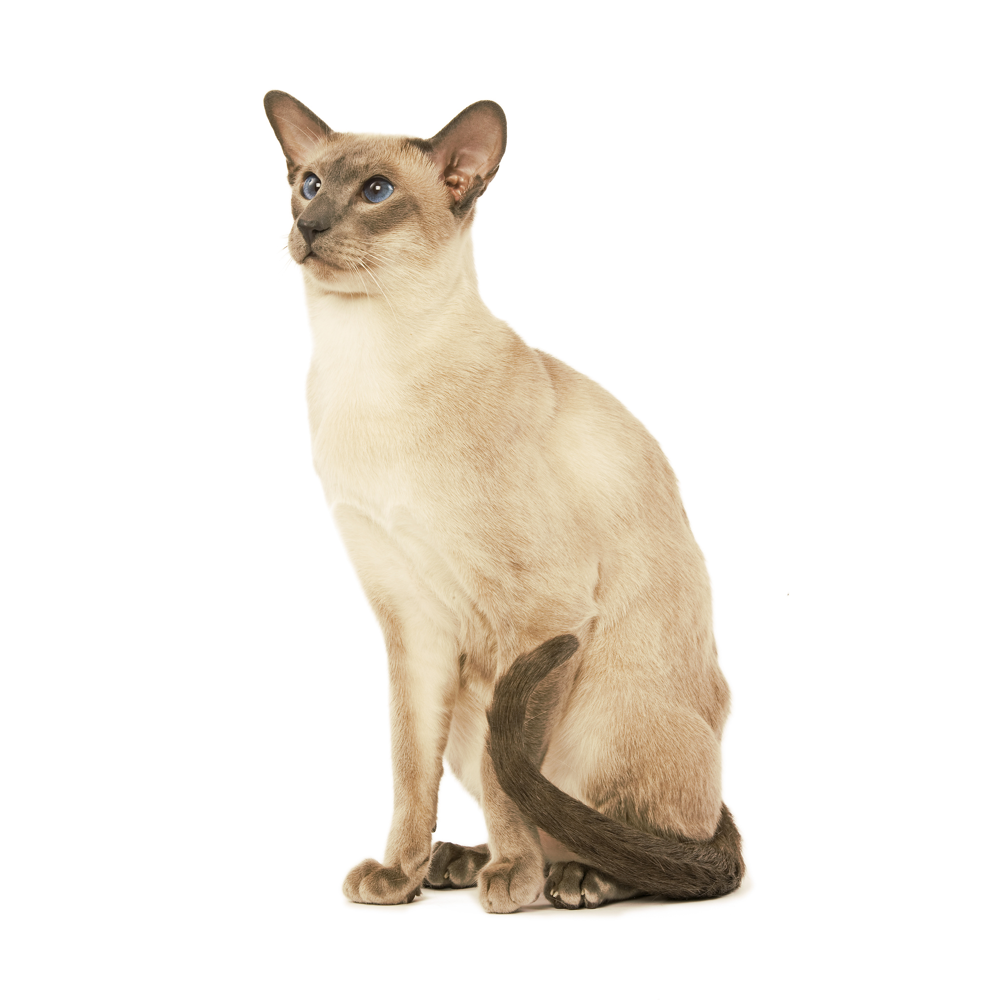

Сиамская
Характеристика
| Образ жизни | На улице \ В помещении |
| Тип шерсти | Короткошерстная |
| Размер | Средний |
| Образ жизни | На улице \ В помещении |
| Тип шерсти | Короткошерстная |
| Размер | Средний |
Характерный внешний вид сиамской кошки обусловлен окрасом колорпойнт в различных вариациях. Тело у сиамов длинное, цилиндрической формы, конечности высокие и элегантные, заканчиваются маленькими изящными лапами овальной формы. Хвост длинный и хлыстообразный, сужающийся к кончику. Шея длинная, грациозная. Кончик длинного, прямого носа и кончики больших ушей образуют равносторонний треугольник. Согласно описанию стандарта, глаза у кошек сиамской породы миндалевидные, насыщенного голубого цвета, поставлены чуть косо. Шерсть короткая, блестящая и плотно прилегающая к телу.
По характеру сиамские кошки идеально подойдут на роль компаньона для тех, кто любит много и активно взаимодействовать с животными. Они превосходно ладят с детьми и другими домашними животными. Это очень любвеобильные и верные существа, требовательные и коммуникабельные, с тонкой интуицией. Сиамская кошка очень умна, и ей всегда есть что сказать. Она обожает быть в центре внимания и очень игрива, но способна часами развлекаться самостоятельно. При этом она никогда не устает играть со своими любимыми игрушками. А еще она очень любит тепло: чем теплее, тем лучше!
В истории происхождения сиамских кошек не так много документально подтвержденных фактов, однако в ней более чем достаточно преданий и легенд. Когда-то они славились как королевские коты и кошки Сиама (старое название Таиланда). Упоминания о них встречаются еще в рукописях XIV века. В XIX веке немецкий натуралист Паллас описал белых котят с темными лапами, которых он видел в Центральной Азии. Затем их завезли в Англию и впервые показали в 1871 году, на выставке в Хрустальном дворце в Лондоне. В 1892 году было составлено описание стандарта сиамских кошек, хотя по началу они были восприняты неоднозначно, оказавшись слишком непривычными для европейского глаза.